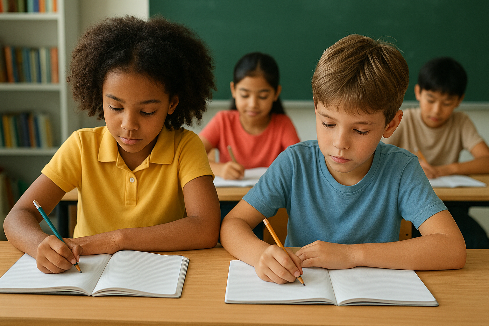

Projeto Esperança - Educação Educação
Promove reforço escolar e oficinas educativas para crianças em vulnerabilidade social.
Promove reforço escolar e oficinas educativas para crianças em vulnerabilidade social.
Iniciativa de reflorestamento e conscientização ambiental em comunidades locais.
Distribuição de alimentos e combate ao desperdício em parceria com supermercados.